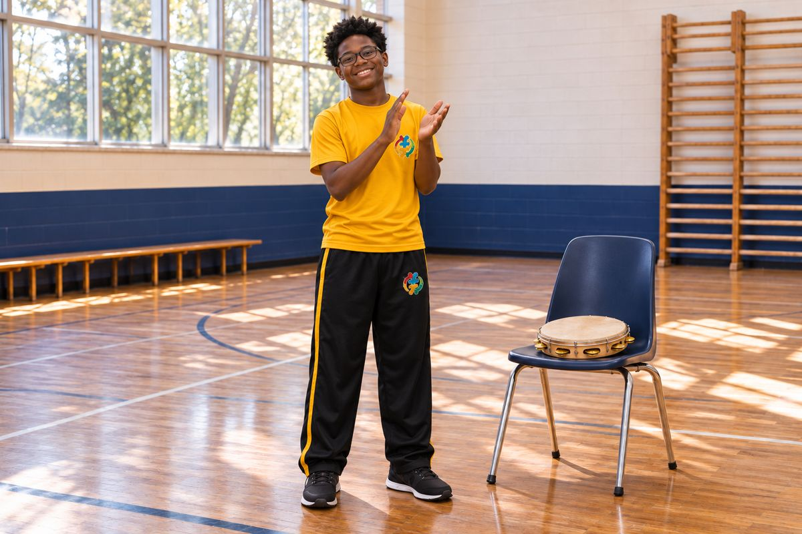

Clear Expectations
Employees will receive written duties, performance expectations, safety responsibilities, documentation requirements, and professional standards.

Rooted in Wisdom. Rising in Purpose.
Professional Standards
A developing framework for clear expectations, professional support, documented performance, and fair personnel decisions.
Policy status: This page describes the intended framework, not a final employee handbook or employment contract. Final policies will be reviewed for applicable law and approved through the school’s governing process.
Employees will receive written duties, performance expectations, safety responsibilities, documentation requirements, and professional standards.
Where appropriate, concerns will be communicated with specific evidence, expectations for improvement, available support, and reasonable timelines.
Corrective action, termination, and contract renewal will be based on documented performance, professional conduct, student safety, assigned duties, compliance responsibilities, due process, written agreements, and applicable law.
The educational principles presented in this work will help inform Aberewa’s professional culture. The book will not replace the school’s governing handbook, employment contracts, evaluation procedures, or legal obligations. Formal personnel decisions will be controlled by approved written policies and agreements.
Explore the BookReview the Legal & Professional Standards framework for Louisiana private-school qualifications, the planned yearlong internal training pathway, safeguarding, employment rights, and school operations.

Movement · Music · Community
Staff will connect relevant academic objectives to cultural learning, respect student communication and sensory needs, and follow supervision procedures. Physical instruction requires an appropriately qualified instructor.
Our schoolwide approach is inspired by Mestre Curtis Pierre’s work in New Orleans, with attention to fluid movement, balance, flexibility, music, and cultural history.